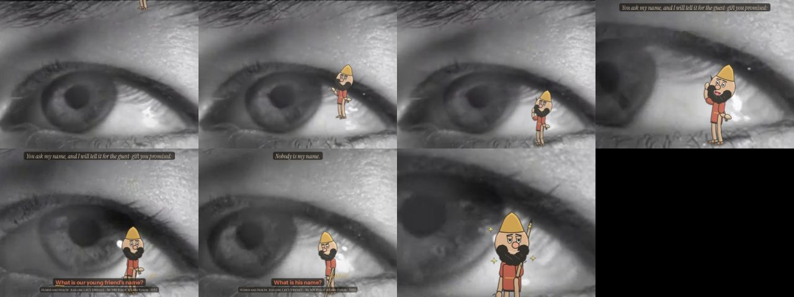
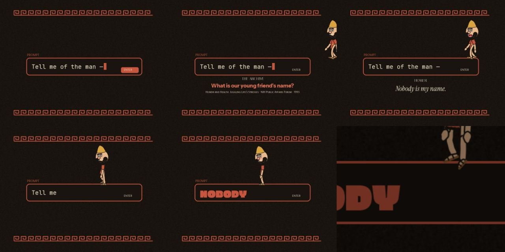
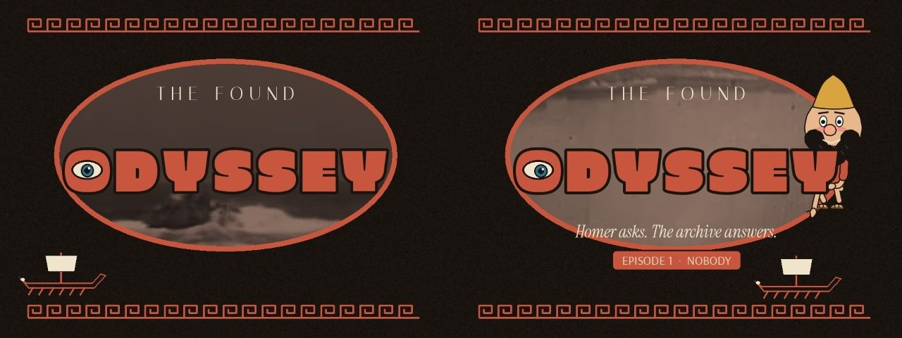
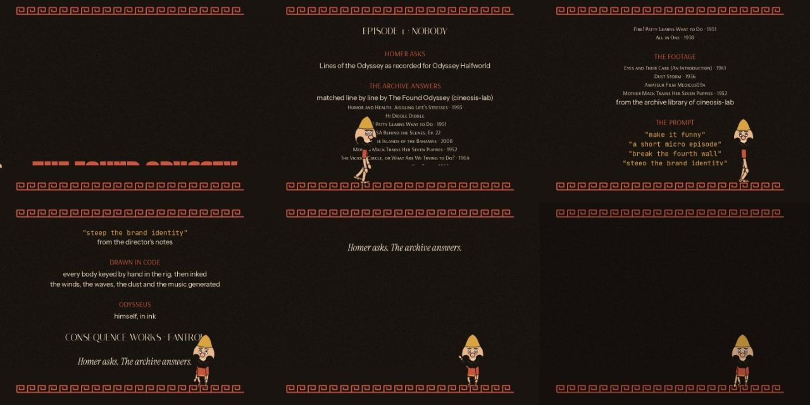

Home / The Found Odyssey / Episode 1 · NOBODY
Test ODY-E1 The Found Odyssey
Episode 1 · NOBODY
Book 9 in three minutes: a prompt box asks for the hero's name, the archive asks for "our young friend's", and Odysseus answers "Nobody."
- Running time
- 3:27
- Made
- 2026-10-18
- Program
- The Found Odyssey
- Characters
- Odysseus, Polyphemus
- File
- mp4, 960 wide, 16 MB
Production notes · THE FOUND ODYSSEY · Episode 1 · NOBODY
Running time 3:27, 1280×720, 24 fps.
Running order
Here it is in order. Click a frame and the film plays from there.
- Part
- Cold open
- What happens
- A prompt box types "Tell me of the man —". The archive asks for "our young friend's" name. Odysseus walks onto the box and says "Nobody is my name." He stamps on the box, the prompt text erases itself into NOBODY, and he bows to camera.
- Part
- Title
- What happens
- Meander border. The archive footage plays inside a vase cartouche. ODYSSEY stamps in letter by letter, and its O is an eye that blinks. Then the tagline, the "EPISODE 1 · NOBODY" plate, a black-figure ship crossing the frame, and Odysseus popping up behind the letters.
- Part
- I · THE EYE
- What happens
- NOBODY (B09). He hops on his own name and the eye ripples where he lands.
- Part
- II · THE WINDS
- What happens
- AEOLUS (B10). He sleeps on the bag of winds, the winds burst out, he is blown away and comes back.
- Part
- III · THE SONG
- What happens
- SIRENS (B12). He is lashed to the mast, with hearts drifting toward the Sirens' panel.
- Part
- IV · THE DOG
- What happens
- ARGOS (B17). Delight, a jolt, and a goodbye wave.
- Part
- Credits
- What happens
- The cast, the archive sources, the prompt quoted back as credits, and the studio card. Odysseus walks the border, sits to watch the roll, then waves.
- Part
- Post-credits
- What happens
- The eye. "Nobody I know, huh?" He shrugs.
Each act opens with a card: a film-strip whip out of the last frame of the previous act, a pluck, and the act title.


check frame Episode check, n

check frame Episode check, cold

check frame Episode check, title

check frame Episode check, credFourth-wall devices
These are the tricks for talking to you directly. Like this.
- The prompt is on screen. The episode opens on the request being typed, and Odysseus treads on it.
- Ink notes. A third voice scribbles on the captions in gold:
- "young?" under "our young friend";
- "again." and "?!" in NOBODY;
- "zzz", "economy, one way", "remember this one" and "ouch" in AEOLUS;
- "WEE-OOO" and "aww" in SIRENS;
- "told you", circled against the source, in ARGOS.
- He looks at us. He bows, winks, waves and shrugs to camera.
- He uses the furniture. He sits on the credits border to watch them.
- The credits quote the brief. The direction you gave ("make it funny", "a short micro episode", "break the fourth wall", "steep the brand identity") appears as credits under THE PROMPT.
Brand kit (ody/brand.py)
The look, written down so every episode matches.
- Palette:
- terracotta (200,85,61);
- ink (26,20,16);
- cream;
- Aegean blue;
- gold for the ink notes.
- Type:
| Use | Font |
|---|---|
| Wordmark | Erica One |
| Small caps | Italiana |
| Homer | Instrument Serif italic, cream on an ink tab |
| The archive | Instrument Sans Bold, terracotta |
| Sources | Arsenal SC |
| The prompt | JetBrains Mono |
| Ink notes | Nothing You Could Do |
- Mark: the O of ODYSSEY is an eye.
- Motifs: the meander border and the black-figure panel.
- Tagline: Homer asks. The archive answers.
- Sound: plucked lyre (synthesised) and a frame drum, built on a five-note motif in D.
Observed and generated
This part separates what came from the archive from what was made here.
Observed:
- Every spoken line is from the Found Odyssey CALL tracks. The words and their order are unchanged; only the pauses are cut.
- The source titles shown on screen are the films each answer comes from.
Not the Found Odyssey's own picks:
- The footage under the drawings comes from the cineosis-lab library (
lab/clips/). The clips the Found Odyssey chose are hosted on r2.dev, which could not be reached from here.
Generated:
- all drawing and animation;
- the title, cards and credits design;
- the ink notes;
- the music, effects and footsteps.
Studio card: "CONSEQUENCE WORKS · FANTROL" is a placeholder and can be swapped in one line of ody/episode.py.
Character designs: all original. The reference images were used for principles only, not for any character.
Review: none yet. In the credits, Odysseus walks in front of the last source lines for about a second before he sits.
More from The Found Odyssey
 Episode 2 · THE GUEST-GIFTThe Cyclops again, as a flashback at the Phaeacian feast, told by two tellers who remember it differently. The experiment: the recollection-image.
Episode 2 · THE GUEST-GIFTThe Cyclops again, as a flashback at the Phaeacian feast, told by two tellers who remember it differently. The experiment: the recollection-image. Episode 3 · THE RAFTBook 5 as one story, each act seen from the point of view of whoever is watching it: the gods on their television, Calypso, Poseidon, the sea.
Episode 3 · THE RAFTBook 5 as one story, each act seen from the point of view of whoever is watching it: the gods on their television, Calypso, Poseidon, the sea. Episode 4 · CIRCEBook 10 re-cut around one line per scene, the place where power shifts: the Laestrygonians, Circe, and the order to sail to the house of Death.
Episode 4 · CIRCEBook 10 re-cut around one line per scene, the place where power shifts: the Laestrygonians, Circe, and the order to sail to the house of Death. Episode 5 · THE BLOODBook 11 in grey, where the only colour is the blood in the trench and whichever shade has drunk it.
Episode 5 · THE BLOODBook 11 in grey, where the only colour is the blood in the trench and whichever shade has drunk it.